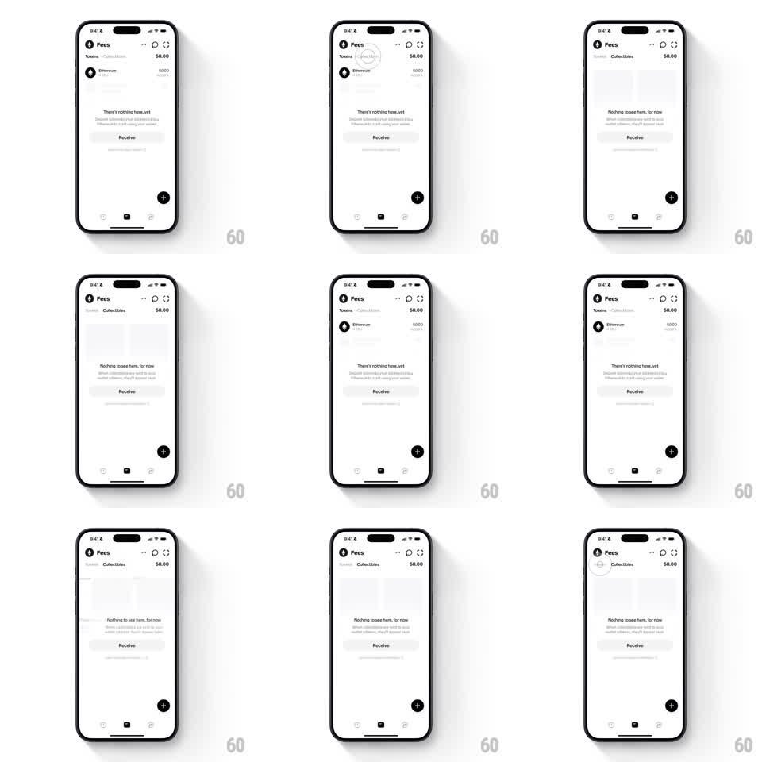

Media
Frame-by-frame

Rebuild this interaction 1:1: Family's Tokens/Collectibles tab switch - on the light "Fees" wallet screen, switching between Tokens and Collectibles slides the content sideways with spring while the two empty states ("There's nothing here, yet" / "Nothing to see here, for now") crossfade, and skeleton placeholders flash during the swap.

Rebuild this interaction 1:1: Family's Tokens/Collectibles tab switch - on the light "Fees" wallet screen, switching between Tokens and Collectibles slides the content sideways with spring while the two empty states ("There's nothing here, yet" / "Nothing to see here, for now") crossfade, and skeleton placeholders flash during the swap.
## Integration
Integration: stack-agnostic spec - springs given as stiffness/damping, timed motions as duration + curve; map every value to your framework and animation library of choice.
## Scene
Light wallet screen "Fees": tab pair (Tokens / Collectibles) under the header with "$0.00" totals, a single Ethereum row ($0.00) on Tokens, empty-state art with copy ("There's nothing here, yet" with subtext; "Nothing to see here, for now" with subtext), a "Receive" pill, a floating black "+" button, and the bottom tab bar (home, compass, activity). Skeleton gray blocks stand in for loading rows.
## Motion spec
Pattern: spring content slide with crossfading empty states.
- Tap a tab: the active tab label's weight/color animates (200ms) and an underline slides to it (spring ~340/22, 250ms).
- The outgoing content slides sideways (direction of the tapped tab, translateX to +-30pt, 200ms ease-in) while fading (150ms); the incoming content slides from the opposite side (spring ~320/20, 300ms) with a 40ms overlap.
- During the swap, skeleton rows shimmer (gray blocks, opacity 1 -> 0.5 -> 1, 1s loop) until the content resolves.
- The empty-state illustration and copy crossfade as one group (250ms); the Receive pill slides up (200ms) after the copy lands.
- The "$0.00" totals persist through the switch; only list content changes.
## Calibration
- The slide distance is short (30pt) - the motion reads as a nudge, not a page swipe.
- The black "+" button and bottom bar stay fixed throughout.
## Reduced motion
Tabs crossfade content (200ms) without sliding.
## Don't miss
- Both empty states have different copy - the morph swaps text, not just art.
- The Ethereum row on Tokens keeps its "$0.00" alignment while skeletons load around it.